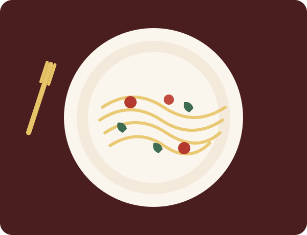

Trattoria Bella
Massas frescas, molhos caseiros e o aconchego de uma verdadeira trattoria, todos os dias da semana.
Reservar mesa
Desde 2009, a Trattoria Bella traz para a cidade as receitas que passaram de geração em geração na família Bellini. Cada prato é preparado com ingredientes frescos e muito carinho, como se você estivesse jantando na casa da nonna.
Reservar mesaCozinha italiana autêntica no coração da cidade.
Rua das Oliveiras, 245 — Centro
Terça a domingo, 18h às 23h
(11) 4002-8922
© 2026 Trattoria Bella. Todos os direitos reservados.